サイト全体のあしらいの見直し（11/08 案）
「あしらいが弱い・バランス感覚が弱い」を受けて、ページ全体に同じ3つの決まりを通しました。
- 色の地：一番上の色の帯と同じ色を、無料相談のカード・Program の図・思いの見出しの後ろに敷く（ページ全体が一枚の絵につながる）
- 図は C2（線＋重ね刷りの粒子）にそろえる
- 読むところは押させない：CDCの特徴はタブをやめて全部見せる（各回の内容はタブのまま）
見直し案をページで見る（PC 1440 の画面で撮影。スマホでも崩れないようにしてあります）
まだ入れていないもの：脇・無料相談の横・一番下の三段の図（組み上がる動きの絵）を C2 にそろえること。決まったら描き直します。
CDCの特徴
タブをやめ、3つを縦に並べて全部見せる。大きなオレンジの番号（64px）・言葉 左・図 右（C2）。押さなくても一度に読める
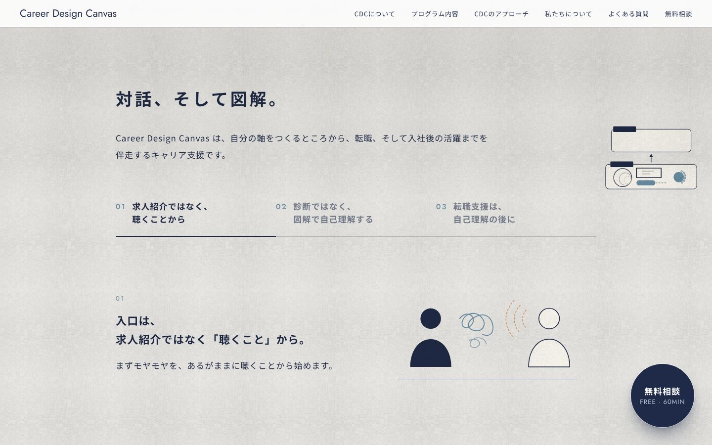
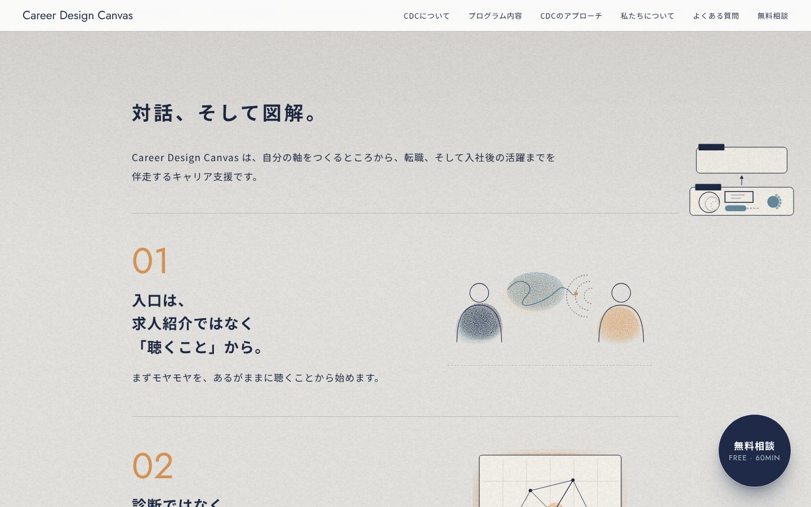
Program
図を C2 に。色の帯と同じ色の地の円に入れる
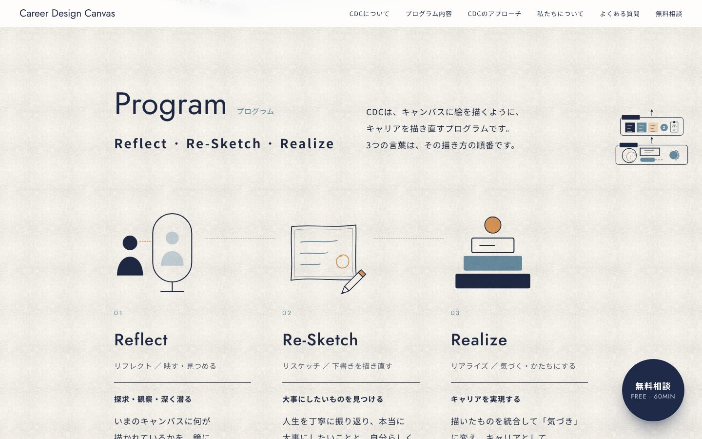
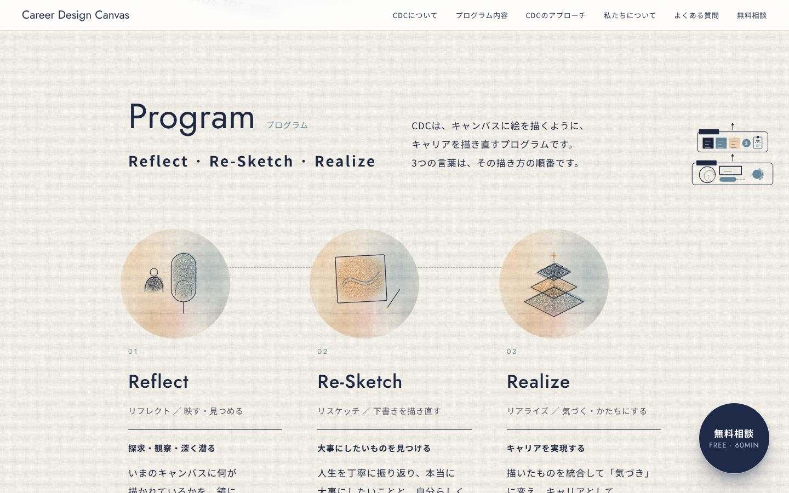
無料相談（途中）
帯と同じ色の地のカードに入れ、ひとかたまりに見せる
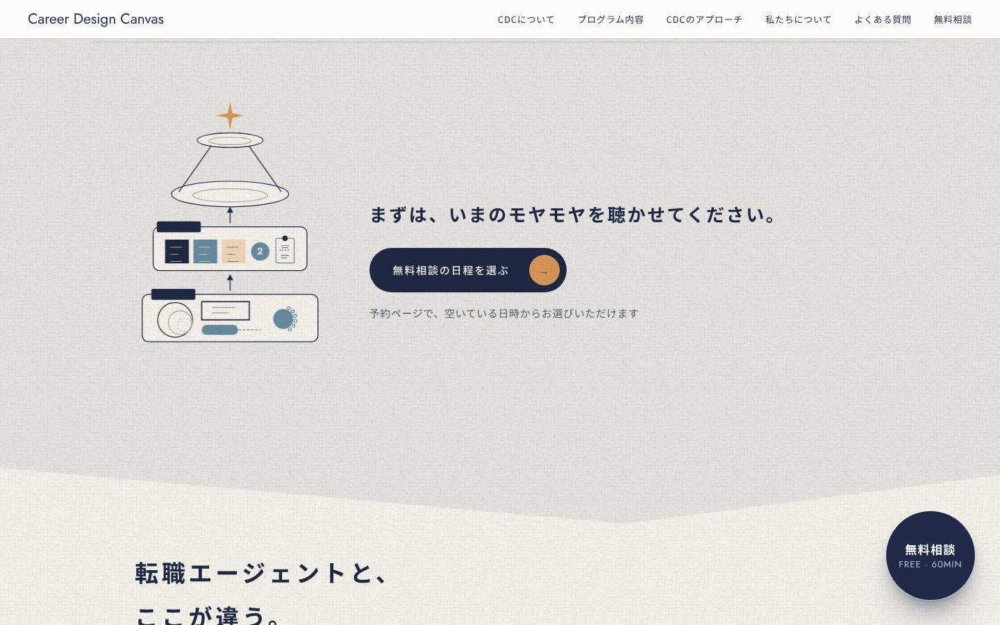
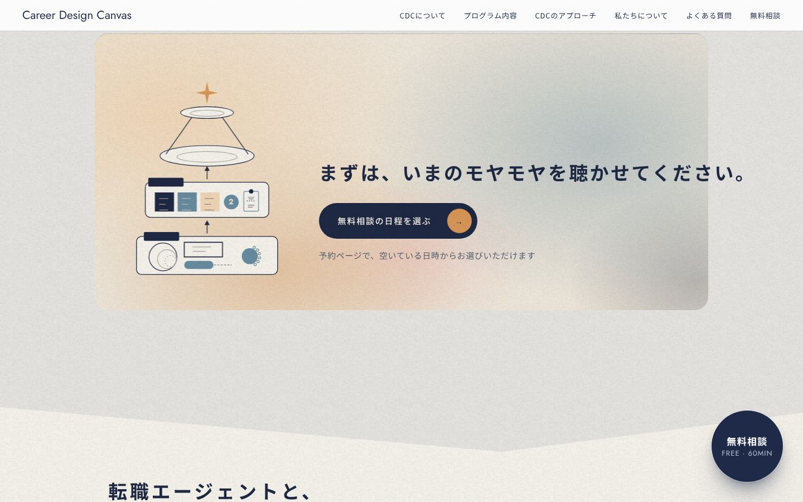
料金
小さな図を C2 に（いまの図は細かすぎて読めなかった）
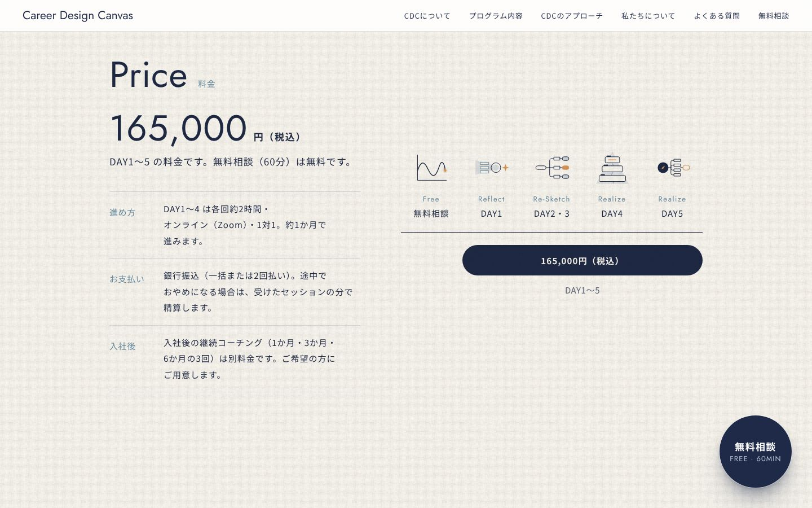
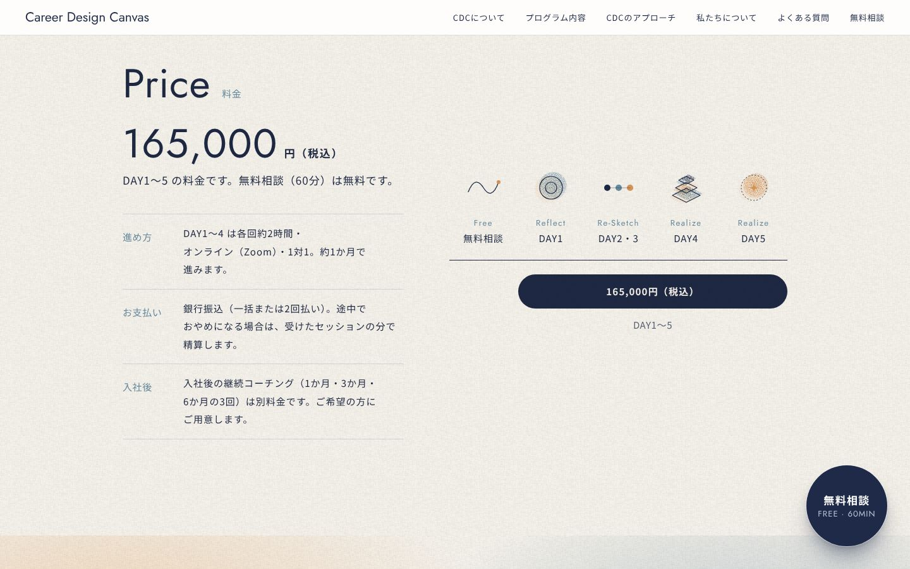
私たちの思い
見出しの後ろに色の地
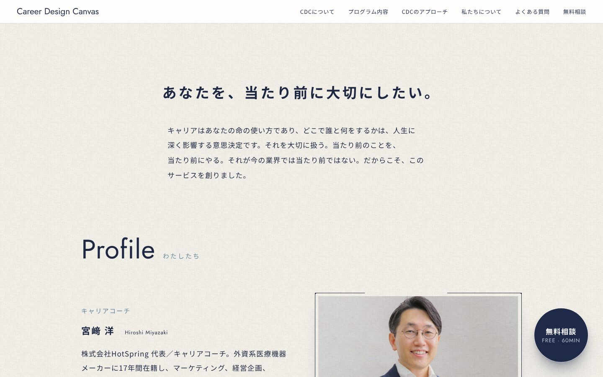
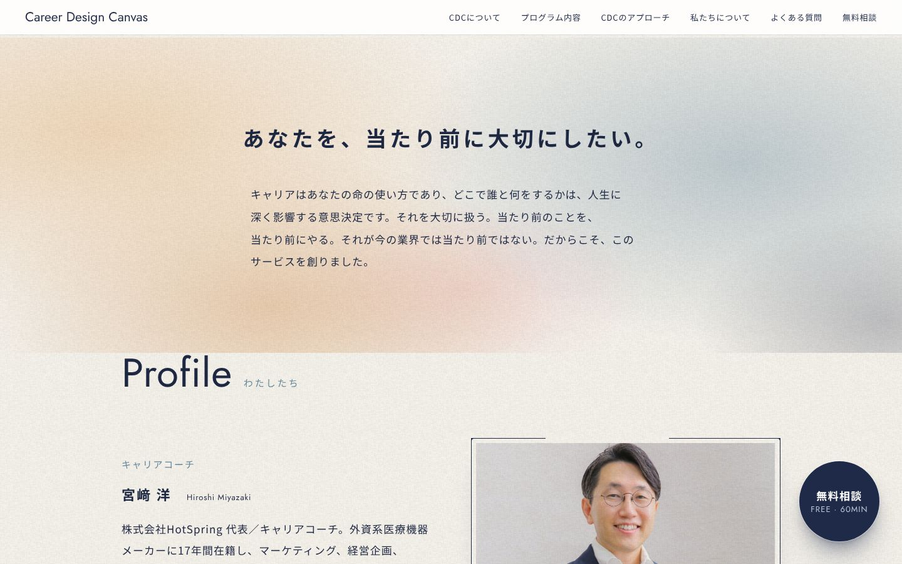
よくある質問
三角を「Q」の印に
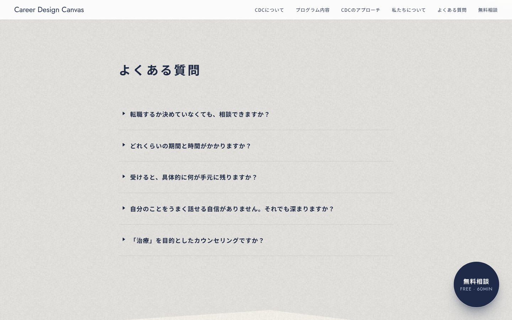
無料相談（最後）
帯と同じ色の地のカードに。チップとボタンを中央でまとめる
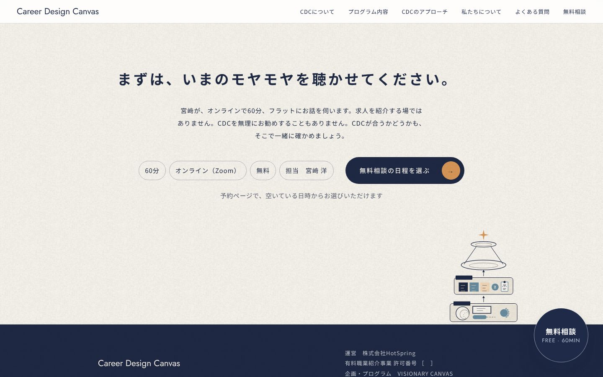
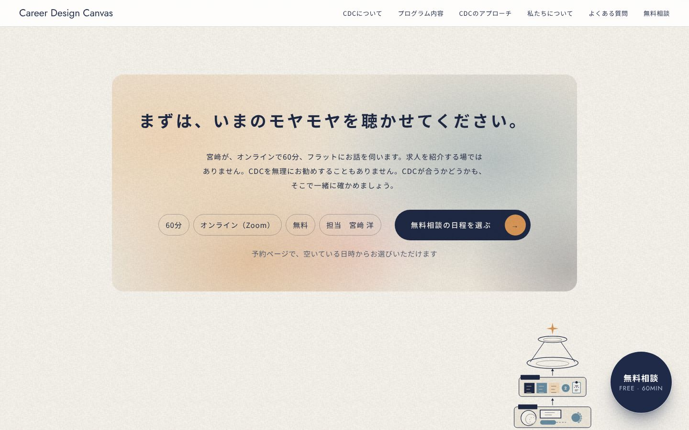